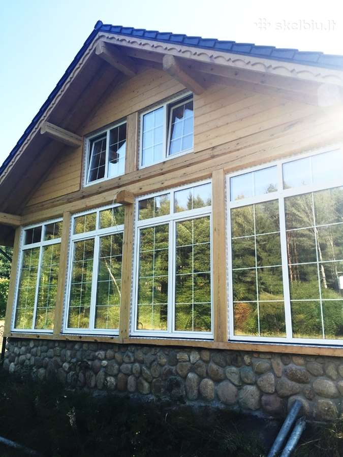
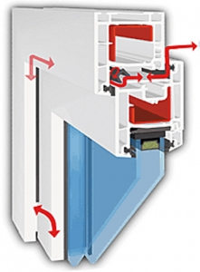

Langterma – langų išpardavimas | Langai iš sandėlio iki -60% pigiau

Langterma langų išpardavimas
Langai iš sandėlio iki -60% pigiau Pereiti prie turinio Langų kainos Standartinių langų kainos Lauko durų kainos Balkono gaminių kainos Langai iš sandėlio Langai Vitrinos Durys Langų gamyba Langų priedai Stiklo paketai Stiklo paketų gamyba Stiklo paketų keitimas Stiklo paketų išpardavimas KontaktaiDĖMESIO! Nelikvidinių langų ir vitrinų išpardavimas!
Paskelbta 19 vasario, 2018 LangtermaDėmesio! PRIIMAME UŽSAKYMUS NAUJŲ LANGŲ GAMYBAI!
Gamybos terminas: 2 savaitės
Apie langus sandėlio kainomis: Išparduodami nauji nelikvidiniai, nekondiciniai plastikiniai langai ir durys tiesiai iš sandėlio(pagaminti Lietuvoje). Kainos žemiau savikainos: net iki -60% langų kainos, tai nekondiciniai plastikiniai langai, langai iš sandėlio, langai parduodami tiesiog už savikainą. Mūsų langų sandėlis yra Vilniuje, o įmonės langų gamyba Rumšiškėse (Kauno raj.). Mūsų siūlomi pigūs langai parduodami gamintojo kainomis. Lyginant su visais kitais, pigiausiai galima įsigyti vitrininius langus, vitrininių langų kainos yra mažesnės už varstomų langų kainas.
Kodėl nekondiciniai langai? Turime jau pagamintų langų, kurių dalis buvo pramatuoti, kitos dalies klientai neatsiėmė (neapmokėjo). Taip pat turime nenaudojamo gamyboje profilio likučių ir stiklo paketų , kas sudaro sąlygas pasiūlyti Jums naujai pagamintų langų ir vitrinų geriausiomis kainomis! Visi gaminiai kokybiškai sukomplektuoti, langai yra kaustyti atitinkamais apkaustais, priklausomai nuo lango gabaritų.
Langų profiliai: Aluplast, Salamander, Gealan, Decco, Plastmo, Trocal ir kt.
Dėmesio tai ne naudoti plastikiniai langai! Išparduodamų langų nuotraukas galima rasti atitinkamose skiltyse: Varstomi langai iš sandėlio , vitrinos , lauko ir balkono durys .
Neradote Jums reikalingų langų kainos? Daugiau langų Jūsų butui
Kas yra langų išpardavimas? S iūlome įsigyti naujus plastikinius langus pigiau! Esame plastikinių langų gamintojai, atstovaujantys Gealan, Decco ir kt. profilių gamintojų prekės ženklus. Nekondiciniai p lastikiniai langai. Vilniaus sandėlyje nuolat turime turime tam tikrą likutį nekondicinių langų su stiklo paketais, langų ir durų rėmų, stiklo paketų, langų priedų žemesnėmis nei rinkos kainomis! Pristatysime reikiamus langus nurodytu adresu, o jei nerasite tinkamų pagaminsime naujus už mažesnę kainą! Mūsų sandėlį rasite: Ukmergės g. 221, Vilniuje. Visais klausimais galite susisiekti su mumis kontaktuose nurodytais numeriais.
54.689160 25.279800 Paskelbta temoje Uncategorized | Pažymėta balkoninių durų rankenėlė , decco , dėvėti langai , gaminame langus , išpardavimas , langai , langai iš sandėlio , langai į sodą , langu išpardavimas vilnius , langų gamyba , langų išpardavimas , langų sandėlis , naudoti langai , naudoti plastikiniai langai vilniuje , nekondiciniai langai , nelikvidai , nelikvidiniai langai , pagaminti langai sandelys , pigiausi plastikiniai langai , pigūs langai , plastikiniai langai ispardavimas , plastikiniai langai vitrinos , pramatuoti langai , standartiniai langai , stiklo paketai , stiklo paketai kaina , virtuvės langas | Parašykite komentarąArchyvai
2018 m. vasario mėn.Metainformacija
Registruotis Prisijungti Langterma langų išpardavimas Blogą talpina WordPress.com.